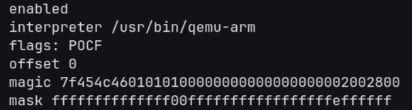
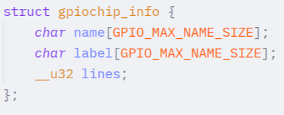
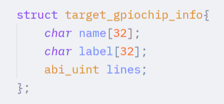
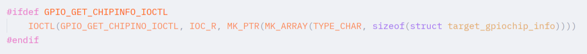
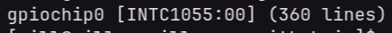

qemu gpio
accessing gpio through a qemu emulation layer
Getting Started
This project required a development board running Debian 13 to run applications controlling gpio pins
To expedite development, using a 32bit debian docker image and qemu as an emulation layer to the 64 bit host would remove the dependency on having the physical board and flashing code to it to test everytime
Qemu emulation using binfmt_misc
Miscellaneous Binary Format allows the execution of non-native files on the linux host system
It is managed by files in /proc/sys/fs/binfmt_misc
The tonistiigi/binfmt docker image builds qemu-user emulator binaries which can be used by the host's binfmt_misc system
You can install the necessary arm binary by calling docker run --privileged --rm tonistiigi/binfmt --install arm which should show the following in /proc/sys/fs/binfmt_misc/qemu-arm

fig 1.0: qemu-arm binary installed onto linux host binfmt_miscNow, running a arm32v7/debian:trixie container will work on the 64bit host because of the qemu emulation layer
libgpiod
libgpiod is a c library used for interacting with gpio on linux. Per linux/gpio.h, there are several v1 ioctls and new v2 ioctls. Libgpiod v1.x.x works only with the now depracated v1 ioctls
By default debian:trixie comes with v1.6.3, in order to use v2 ioctls we will have to build libgpiod from source
The libgpiod docs detail how to build from source, with the following configuration required to have the tools & c++ bindings
For versions v2.3+ -> meson setup .. -Dtools=enabled -Dbindings-cxx=enabledv2.2 and earlier -> ./autogen.sh --enable-tools=yes --enable-bindings-cxx=yes
Accessing gpio devices in a container
Map the device to the container using the --device flag
docker run --rm -it --platform linux/arm/v7 --device=/dev/gpiochip0 debian:trixie bash
This will pass the device into the container, but will not allow access unless the root user is being used. This can be resolved by creating a gpio group, adding the user to it, and updating rules for device access
sudo goupdadd -f gpio
sudo usermod -aG gpio $USERcreate a custom udev rule in
/etc/udev/rules.d
SUBSYSTEM=="gpio", KERNEL=="gpiochip*", GROUP="gpio", MODE="0660"
Now running gpiodetect should no longer show a permission error
unsupported ioctl() command
The emulation layer is running, but qemu does not support every system ioctl() call, of which gpio is one
The ioctl calls that are made by gpiodetect are never escaping the emulation layer. There is no passthrough to convert the system call from arm32 to X86_64
The qemu source code must be modified to add gpio ioctl() support to allow this communication to occur
Qemu Source
The qemu repo is fairly extensive, but there are only a couple files all located in linux-user we need to modify to add gpio support
ioctls.h --> all ioctl() definitions
syscall.c --> main functions or handling incoming ioctls()
syscall_defs.h --> ioctl() struct definitions
syscall.c
Only need to add the import to linux/gpio.h
syscall_defs.h
The ioctl() struct definitions for the v2 gpio ioctl() calls need to be added in here
They can be found in /usr/include/linux/gpio.h

fig 2.0: linux gpio.h struct gpiochip_info definitionTaking the linux definition of gpiochip_info, we add it to syscall_defs.h, producing the following

fig 3.0: qemu gpiochip_info definitionioctls.h
Qemu uses several macros when defining ioctls, we will use the IOCTL() macro for ours

fig 4.0: qemu gpiochip_info ioctl definitionWe add a check for the linux definition of the GPIO_GET_CHIPINFO_IOCTL
IOC_R means we expect this to be a READ call only
The final argument is the expected value/return, where we are telling qemu to expect a certain size char array, based on the linux ioctl structs we created
*Based on how qemu defines other ioctls, there is certainly another way to define the gpio ioctls so they work, but these will do for now
Building a custom binary
Wih the modified qemu source, we now need to build it into our now custom, gpio ioctl supported qemu-arm-static binary
Once built, we use the same docker image from before tonistiigi/binfmt as the base image, and copy the custom binary to /usr/bin/qemu-arm to build a custom qemu-binfmt image
Like before, the image will need to be installed to the host kernel. Once done the custom qemu emulation is ready to test
Ensuring deployment
An issue I faced was that my custom binary was not being used, the install was "working" but the old binary continued to be in use. A guaranteed install/reset can be done the following way
echo -1 | sudo tee /proc/sys/fs/binfmt_misc/statusDoing this resets binfmt_misc. Then the custom docker image can be installed with the new, gpio supporting binary
Now running gpiodetect from the arm32 container should yield a sucessful call with a similar response to below

fig 5.0: gpiodetect outputDebugging tools
strace -f -p [container pid] -o strace-logs.txtRunning this on the host will see logs from the running container
You can also run
strace -e ioctlon the host to only see ioctl calls
QEMU_LOG=unimp,strace gpiodetectWhen running
gpiodetectfrom the arm32 container, passing the QEMU_LOG env variable will allow for additional logging when running commands
Conclusion
This was a challenging, frustrating, yet fun and rewarding project. There were several steps along the way that required learning new things about qemu, linux ioctls, debugging with strace and much more
Some information is missing from here, and I may revisit to clean it up, but this acts as a sort of guide to how I went about solving this problem
Onto the next one